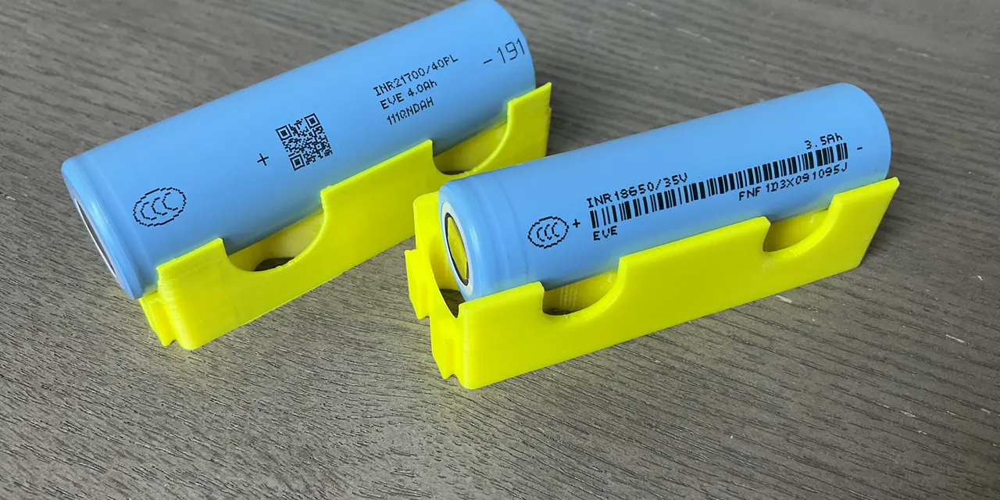

솔리디온 테크놀로지를 볼 때 가장 먼저 조심해야 할 문장은 “차세대 배터리 기업입니다”라는 소개입니다. 그 말 자체는 틀리지 않습니다. 회사는 고체전지, 실리콘 음극, 배터리 소재와 에너지 저장 솔루션을 내세웁니다. 다만 주주에게 중요한 질문은 기술 설명이 아니라 이 기술이 언제 매출, 현금, 고객 계약으로 바뀌는지입니다.
2026년 1분기에는 긍정적인 변화도 있었습니다. 솔리디온은 2026년 5월 20일 제출한 10-Q에서 2026년 1분기 순매출 85,426달러를 기록했습니다. 2025년 같은 기간 순매출이 없었다는 점을 생각하면 첫 상업 매출은 분명 확인해야 할 신호입니다. 그러나 이 숫자 하나만으로 상용화가 끝났다고 보기는 어렵습니다.
이 종목의 핵심은 기대가 큽니다가 아니라 시간이 얼마나 남았나입니다. 2026년 3월 31일 기준 현금은 38,887달러였고, 총부채는 1,359만5,332달러였습니다. 회사는 계속기업 의문도 공시했습니다. 그래서 이번 글은 주가가 먼저 반응한 뒤 실적이 따라와야 하는 부담을 중심으로 읽겠습니다.
첫 매출은 시작이지 결론이 아닙니다

솔리디온의 2026년 1분기 순매출 85,426달러는 투자자가 그냥 지나치면 안 되는 변화입니다. 배터리 소재 기업이 연구개발 단계에서 상업 판매 단계로 넘어갈 때 첫 매출은 고객 테스트, 공급 준비, 제품 사양 확정의 흔적일 수 있습니다. 특히 배터리 업종은 기술 발표보다 실제 납품 이력이 더 강한 신호가 됩니다.
하지만 이 숫자는 아직 회사의 고정비를 덮을 정도의 매출은 아닙니다. 같은 분기 매출원가는 1,696달러였고 매출총이익은 83,730달러였습니다. 표면상 총마진은 좋아 보일 수 있지만, 매출 규모가 너무 작기 때문에 총마진율 자체를 크게 해석하면 안 됩니다. 투자자는 다음 분기에도 매출이 반복되는지, 고객 수가 늘어나는지, 같은 고객이 더 큰 주문을 내는지 봐야 합니다.
배터리 소재 회사의 상용화는 샘플 납품과 양산 납품 사이의 거리가 깁니다. 고객은 셀 성능만 보지 않고 수명, 안전성, 납기, 가격, 공급 안정성, 품질관리까지 확인합니다. 그래서 솔리디온의 첫 매출은 기대를 열어주는 문이지, 이미 통과한 문이 아닙니다.
현금 잔고가 상용화 속도를 정합니다
관련 영상
솔리디온 테크놀로지 STI 사업 변화와 희석 리스크를 설명하는 한국어 롱폼 영상
2026년 1분기 10-Q에서 더 먼저 볼 숫자는 현금입니다. 2026년 3월 31일 기준 현금은 38,887달러였습니다. 총유동자산은 135만6,503달러였지만, 그 안에는 현금 외 다른 항목이 섞여 있습니다. 배터리 상용화 기업은 실험, 인증, 특허, 생산 준비, 고객 대응에 시간이 필요하므로 현금 잔고가 곧 선택지의 폭이 됩니다.
같은 기간 영업활동 현금 유출은 141,863달러였습니다. 전년 동기 234만2,278달러 유출보다는 크게 줄었지만, 현금 잔고와 비교하면 여전히 부담입니다. 회사가 비용을 줄였다고 해도, 매출이 본격적으로 늘기 전까지는 외부 자금 조달 가능성을 계속 봐야 합니다.
총부채도 가볍지 않습니다. 2026년 3월 31일 기준 총부채는 1,359만5,332달러였고, 매입채무와 미지급비용은 555만3,222달러였습니다. 단기차입금은 260만7,666달러였습니다. 이 구조에서는 “기술이 좋다”는 주장보다 “자금을 어떤 조건으로 조달할 수 있나”가 주당 가치에 더 직접적으로 닿습니다.
SPAC 이후 구조와 G3 관계를 분리해서 봐야 합니다
솔리디온은 원래 Nubia Brand International Corp.와 Honeycomb Battery Company의 합병을 통해 현재 구조가 만들어졌습니다. Honeycomb Battery Company는 Global Graphene Group의 에너지 솔루션 부문이었습니다. 이런 배경은 기술 자산의 출처를 이해하는 데 도움이 되지만, 동시에 주주가 구조를 단순하게 보면 안 된다는 뜻이기도 합니다.
10-Q에는 2025년 10월 9일 G3에 45만 주를 발행해 earnout 관련 의무를 완료했다는 내용이 나옵니다. 또한 G3 관련 세금 담보권 문제도 공시에 남아 있습니다. 회사와 관계사, 건물, 특허, 공유 서비스, 세금 담보권 같은 항목이 얽혀 있으면 투자자는 기술 설명보다 자산과 의무의 경계를 더 꼼꼼히 읽어야 합니다.
이런 구조는 반드시 나쁘다는 뜻은 아닙니다. 다만 소형 성장주는 사업 자체의 리스크와 자본 구조 리스크가 동시에 움직입니다. 합병 이후 지분, 워런트, 단기차입, 관계사 거래가 어떻게 정리되는지 확인해야 좋은 뉴스가 기존 주주의 몫으로 남는지 판단할 수 있습니다.
희석과 내부통제는 기술보다 먼저 주가를 흔듭니다
솔리디온은 2026년 3월 31일 기준 보통주 774만5,683주가 발행되어 있었습니다. 2025년 말 746만5,283주보다 늘었습니다. 또 공시에는 워런트, 파생부채, 사모 발행, 역분할 관련 내용이 반복해서 등장합니다. 소형 배터리 기술주에서 희석은 단순 회계 항목이 아니라 주주 수익률의 가장 큰 변수 중 하나입니다.
회사가 살아남아도 기존 주주의 몫이 줄어들 수 있습니다. 현금이 부족한 상황에서 주식 발행이나 워런트 행사가 이어지면, 매출이 조금 늘어도 주당 가치 회복은 느릴 수 있습니다. 그래서 STI 주주는 다음 호재 기사보다 발행주식 수, 워런트 잔량, 단기차입 만기, 조달 조건을 먼저 확인해야 합니다.
내부통제 이슈도 가볍게 볼 수 없습니다. 10-Q에서 회사는 2026년 3월 31일 기준 공시 통제와 절차가 효과적이지 않았다고 밝혔고, 재무보고 내부통제에서 여러 material weaknesses를 언급했습니다. 성장 초기 회사에서 이런 문제가 드물지 않더라도, 공시 지연이나 회계 재작성 가능성이 커지면 시장 신뢰는 낮아집니다.
비교종목은 상용화 단계 차이를 보여줍니다
퀀텀스케이프, 이노빅스, 아메리칸 배터리 테크놀로지를 함께 보는 이유는 모두 같은 답을 주기 때문이 아닙니다. 오히려 서로 다른 위험을 보여줍니다. 퀀텀스케이프는 고체전지 상용화 일정과 자동차 고객 검증이 핵심이고, 이노빅스는 실리콘 배터리의 생산 수율과 고객 확장이 중요합니다. 아메리칸 배터리 테크놀로지는 배터리 소재와 재활용, 원자재 공급망 성격이 더 강합니다.
솔리디온의 차이는 기술 자산과 특허, Dayton 생산·연구 기반, 첫 매출 신호가 있다는 점입니다. 그러나 비교종목보다 더 엄격하게 봐야 할 부분은 재무 여력입니다. 현금 38,887달러와 계속기업 의문이 함께 있는 회사는 상용화 속도가 조금만 늦어져도 주주에게 자금조달 부담이 먼저 돌아올 수 있습니다.
따라서 이 글의 체크리스트는 네 가지입니다. 첫째, 다음 분기 순매출이 85,426달러에서 반복적으로 커지는지 봅니다. 둘째, 영업활동 현금 유출이 더 줄어드는지 확인합니다. 셋째, 단기차입과 미지급비용이 어떻게 정리되는지 봅니다. 넷째, 신규 주식 발행 없이 고객 계약과 생산 전환이 진행되는지 확인합니다.
솔리디온 테크놀로지는 배터리 내러티브가 강한 종목입니다. 하지만 지금은 꿈의 크기보다 견딜 수 있는 시간이 더 중요합니다. 첫 매출이 다음 주문으로 이어지고, 현금 부족이 불리한 희석으로 번지지 않으며, 내부통제 개선까지 확인될 때 투자 이야기가 더 단단해집니다. 그 전까지는 기술 기대를 읽되, 현금과 주당 가치 훼손 가능성을 먼저 두는 편이 맞습니다.
이 글은 STI 또는 관련종목에 대한 매수·매도 추천이 아닙니다. 투자 판단 전에는 최신 SEC 공시, 회사 발표, 본인의 위험 감내 수준을 반드시 함께 확인해 주세요.